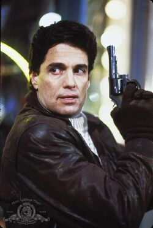

Child's Play is an American horror slasher media franchise created by Don Mancini.
The films mainly focus on Chucky, a notorious serial killer doll who frequently escapes death by performing a voodoo ritual to transfer his soul into a "Good Guys" doll.
The original film, Child's Play, was released on November 9, 1988.
homicide detective Mike Norris chases fugitive and serial killer Charles Lee Ray through the streets of South Side, Chicago, repeatedly shooting him. Charles's accomplice, Eddie Caputo, escapes alone in a getaway vehicle. Charles breaks into a toy store where Mike fatally shoots him again. A dying Charles performs a Haitian voodoo spell to transfer his soul to one of the Good Guy dolls, causing the store to be struck by lightning and explode. Mike survives the explosion and re-enters the store, only to find Charles's corpse and the doll.
